The era of technology and international commerce has left numerous abandoned factories and warehouses scattered across the country, creating untapped potential. Instead of demolishing these structures—an approach both costly and harmful to the environment—we have chosen a different path: to utilize what already exists.
This vision gave rise to the project "Surplus vs. Deficiency." The project aims to repurpose the existing surplus of abandoned buildings to address urban deficiencies in various areas, rehabilitating and adapting these spaces to meet the specific needs of each city.
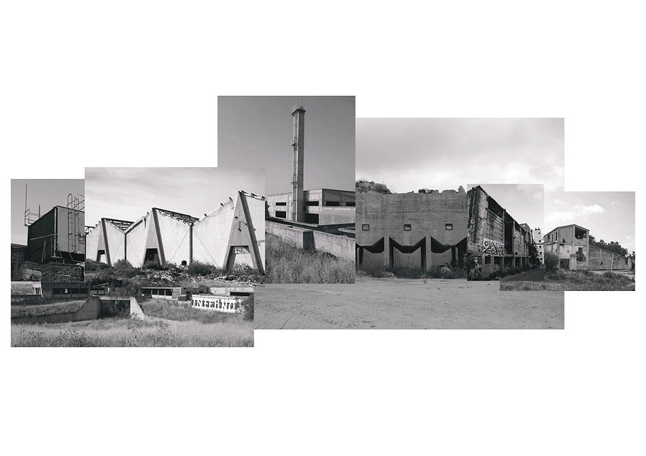
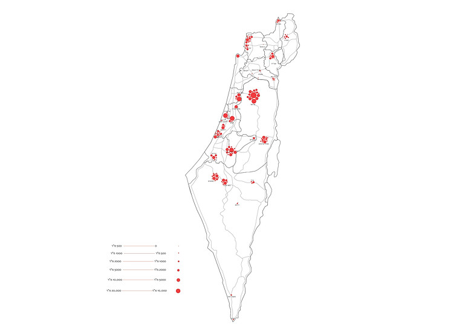
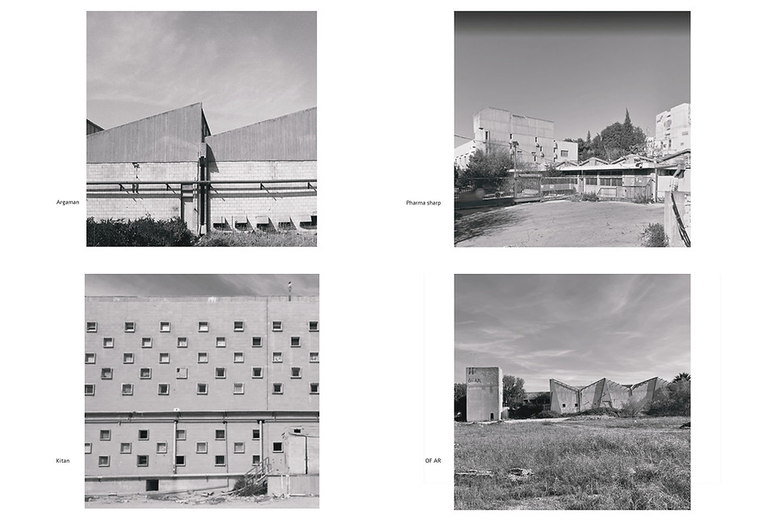
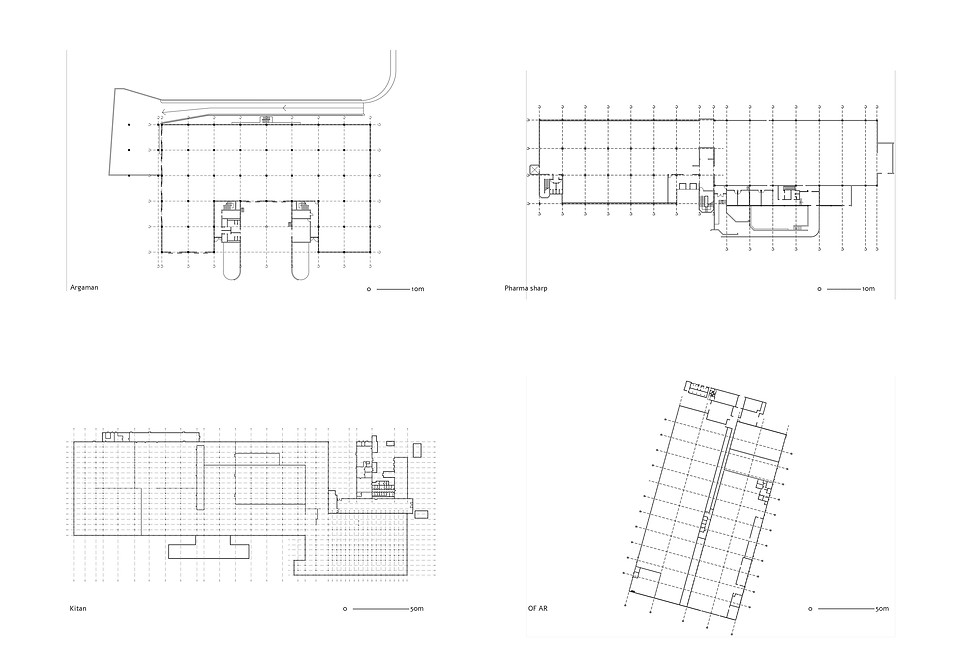
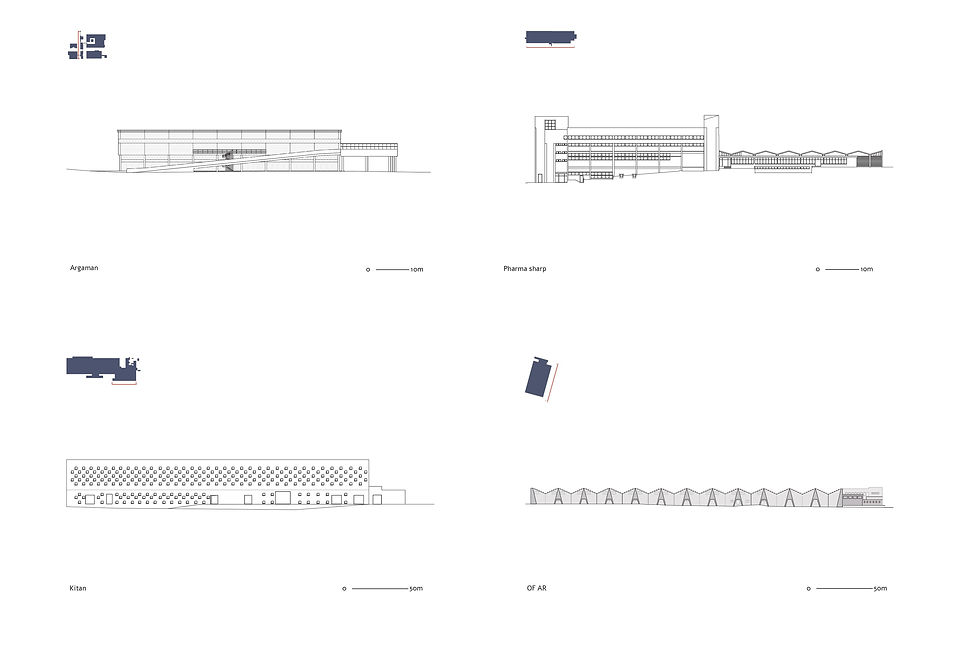
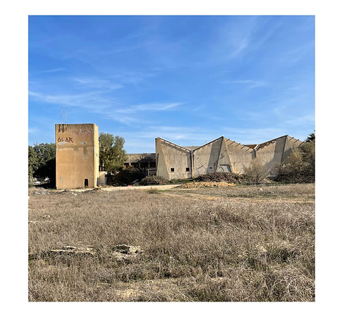
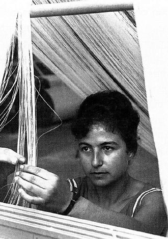
Out of all the case studies, we chose to focus on the Of-Ar factory located in the city of Ofakim. Of-Ar factory was a textile manufacturing plant and played a significant role in the economy of the city of Ofakim.
We chose to expand the structure by doubling the roof and excavating below to create an underground space.
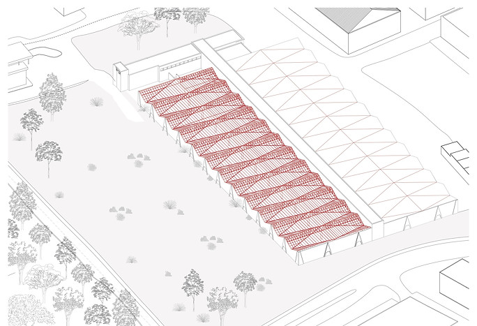
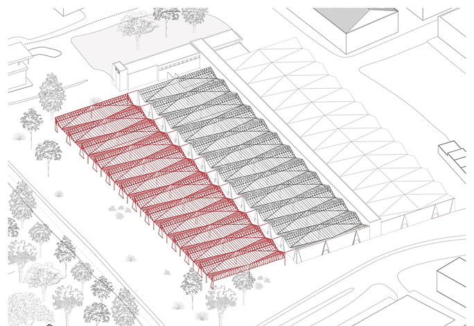
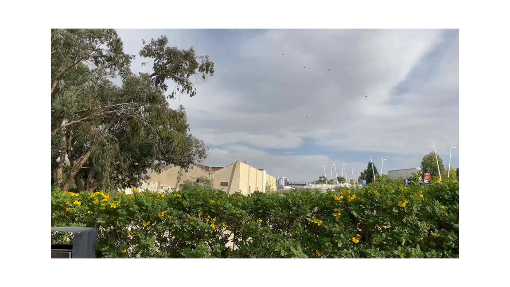
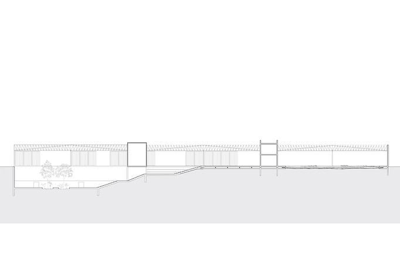
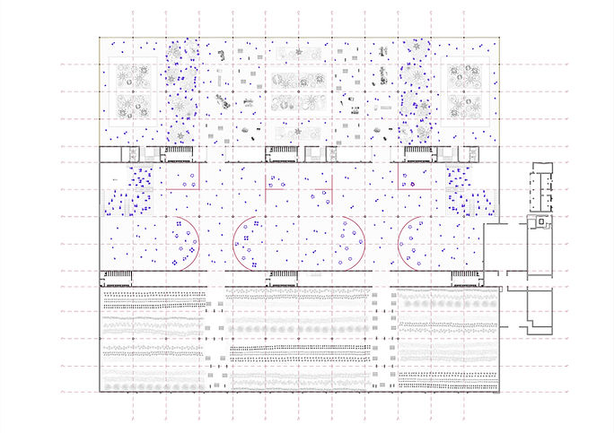
Through our research, we found that Ofakim lacks youth educational facilities, gardens and parks, social gathering spaces, and commercial areas. Therefore, we decided to incorporate all these programs into the complex. To ensure its long-term relevance, we avoided enclosing the spaces with fixed walls. Instead, we utilized curtain tracks, allowing for the creation of flexible and adaptable spaces.
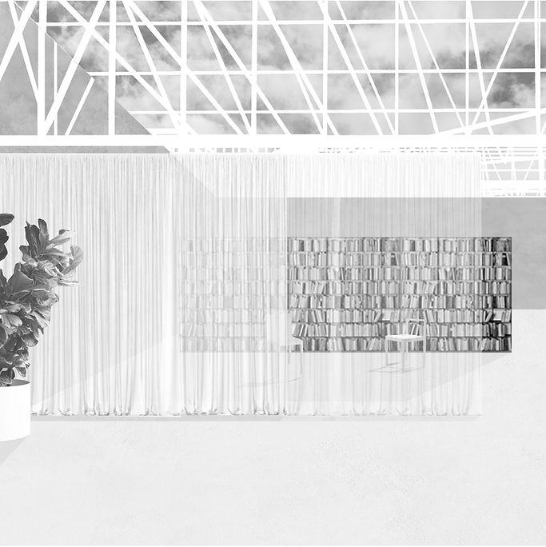
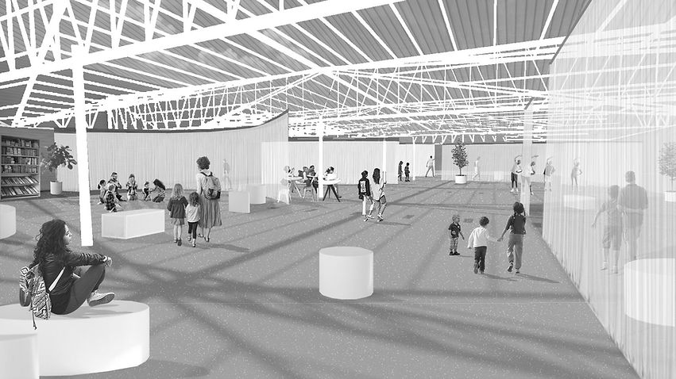
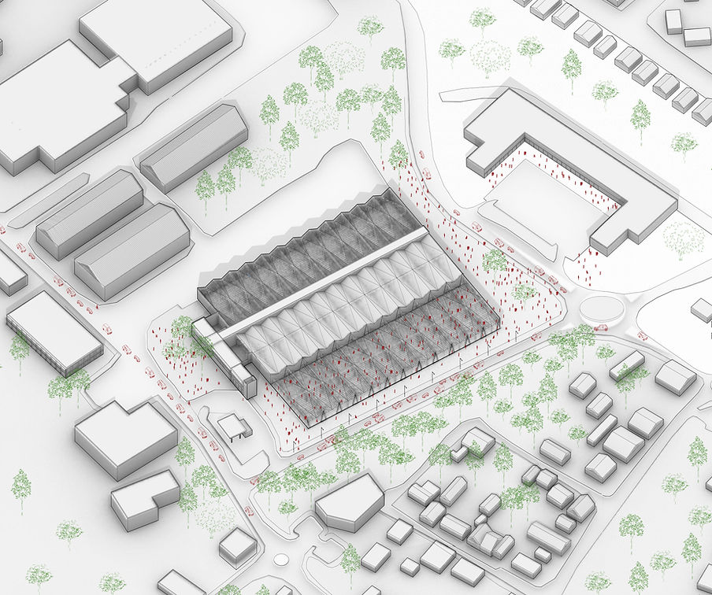